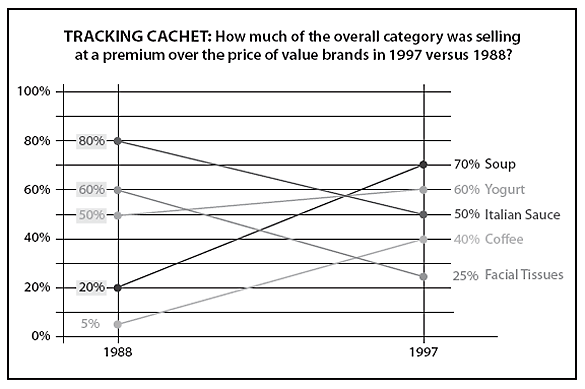

The Starbucks Effect
Author: Vijay Vishwanath
The success of Starbucks cafés has been good for coffee distributors all over the United States.
Author: Vijay Vishwanath
The success of Starbucks cafés has been good for coffee distributors all over the United States.
Author:
In connection with its Reinvention plan, Starbucks introduced a framework for accelerated earnings growth over the next three years, underpinned by enhanced comparable store sales growth, increased store count growth, continued margin expansion, and disciplined capital allocation.
Author: Bhadir K Akcam
The Starbucks Coffee Company was established in 1971 in Seattle, offering high-quality coffee in a friendly store.
Author:
One key advancement is a more efficient cup of coffee.
Author: Bob Nelson
The following five guiding principles will help us measure the appropriateness of our decisions:
Author:
“I heard that Starbucks was a great place to work and fun as well. It sounded like a great first job.”
| Month | Visitors |
|---|---|
| January | 1000 |